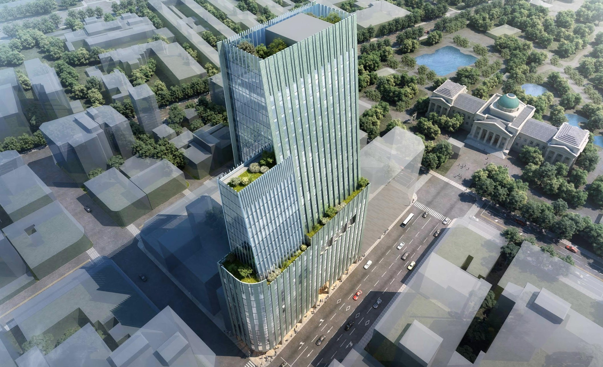
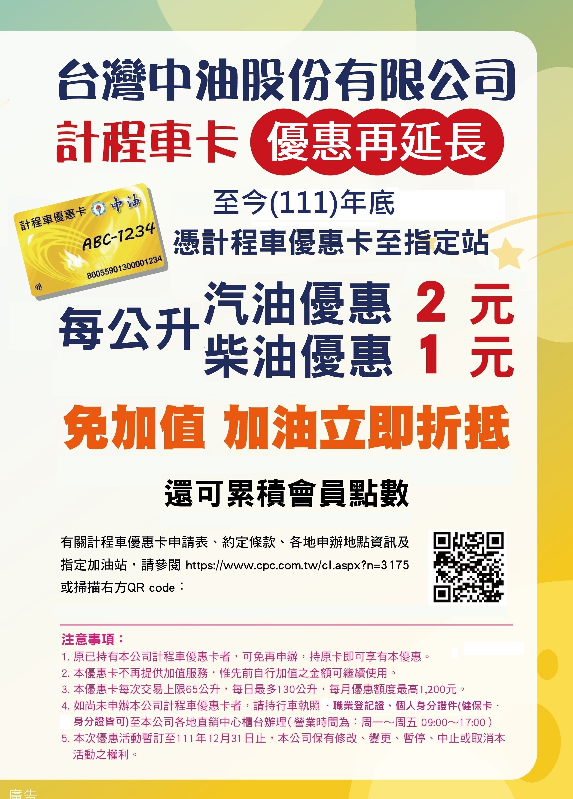

最新消息
觀塘工業區(港)生態保育執行委員會第一次會議
依據行政院環境保護署環境影響評估審查委員會第340次會議決議(八)『針對本案開發單位規劃「施工前設立觀塘工業區（港）生態保育執行委員會」，為強化公眾參與及資訊公開效果，其任務範圍應含括環境影響評估書件及審查結論中有關生態保育及環境監測議題之執行情形，其成員總數不得少於15位，其中專家學者不得少於3分之1，民間團體、當地居民及漁民代表亦不得少於3分之1；且上述會議召開前1週，應擇適當地點及開發單位網站，公布開會訊息，以利民眾申請列席旁聽或表示意見，相關調查及監督資料應公布於開發單位網站上供大眾參閱，以達資訊公開。
本公司參與國泰世華銀行主導之「館前大樓都市更新案」正式與日勝生活科技股份有限公司簽訂委託合作契約，攜手打造臺北站前商辦新地標。

本公司前台灣營業總處所在地之館前聯合大樓係興建於民國70年的辦公商業大樓，其屋齡已超過40年，面臨老舊管線維修不易、停車空間不足等問題，已不符現代商辦大樓應有機能。104年由館前大樓地主之一國泰世華商業銀行發起主導，本公司、唐榮鐵工廠公司等法人董事會及所有權人共同決議下，朝都市更新重建方式辦理。
本案歷經多次會議討論，109年10月以公開評選方式，由日勝生活科技股份有限公司與大元聯合建築師事務所、泰誠發展營造等國內頂尖團隊合作，以「城中晶綻-白綠雙輝」為題進行重建規劃設計，其用心及誠意深獲地主與專家學者等評審委員的青睞，獲選為本案最優申請人。
「計程車優惠卡」優惠方案

一、Q：什麼是計程車優惠卡？
A：計程車優惠卡係專屬計程車司機使用之卡片，當司機持優惠卡於本公司加油時，即可享有相關優惠。
二、Q：申辦計程車優惠卡可享哪些優惠？
A：申辦計程車優惠卡，於加油時可享有每公升牌價折抵優惠。